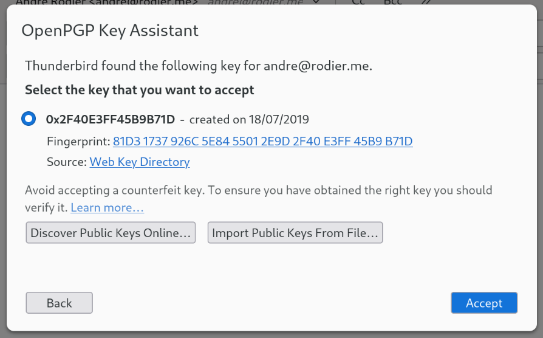

A Web Key Directory (WKD) provides an easy way to provide and get the current public key for a given email address through HTTPS. Thus it is infrastructure to improve the user experience for exchanging secure emails and files. Because the email address is needed to ask for a public key, using a Web Key Directory preserves the privacy of this address. If a public key is found, it can be used to encrypt to the email address right away.
